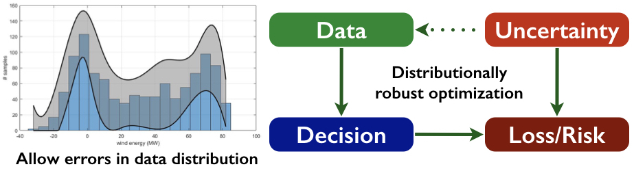

ICRA2020
Wasserstein distributionally robust motion planning and control with safety constraints using conditional value-at-risk. Astghik Hakobyan, and Insoon Yang. Proceedings of the 2020IEEE International Conference on Robotics and Automation (ICRA), pp. 490-496, 2020.
Air
STAR: Spatio-temporal prediction of air quality using a multimodal approach. Tien-Cuong Bui, Joonyoung Kim, Taewoo Kang, Donghyeon Lee, Junyoung Choi, Insoon Yang, Kyomin Jung , and Sang Kyun Cha. Proceedings of the 2020 Conference on Intelligent ...
Multi-Objective Predictive Taxi Dispatch via Network Flow Optimization
The paper “ Multi-objective predictive taxi dispatch via network flow optimization “, authored by Beomjun Kim, Jeongho Kim, Subin Huh, Seungil You, and Insoon Yang, has been accepted to IEEE Access. This work was done in ...
Data-Driven Distributionally Robust Stochastic Control of Energy Storage for Wind Power Ramp Management Using the Wasserstein Metric
Data-driven distributionally robust stochastic control of energy storage for wind power ramp management using the Wasserstein metric. Insoon Yang. Energies,vol. 12, no. 23, 4577, 2019.

Data-Driven Distributionally Robust Stochastic Control of Energy Storage
The paper “ Data-driven distributionally robust stochastic control of energy storage for wind power ramp management using the Wasserstein metric “, authored by Insoon Yang, has been published in Energies. The proposed storage management solution overcomes ...